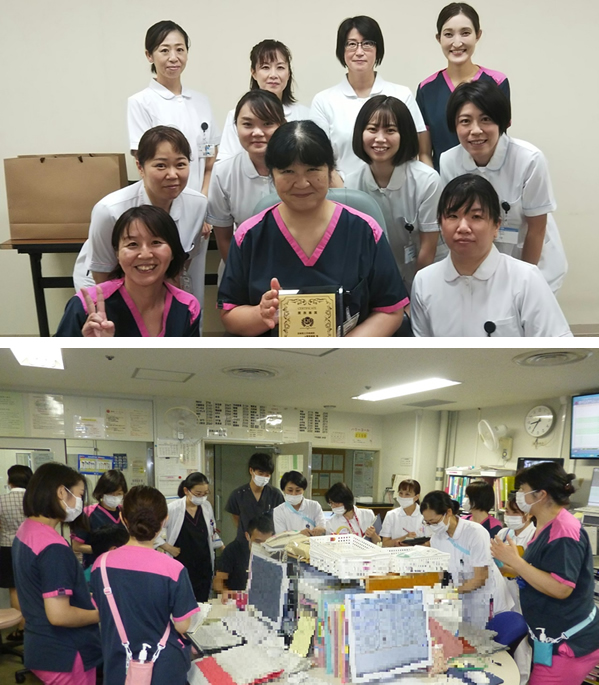
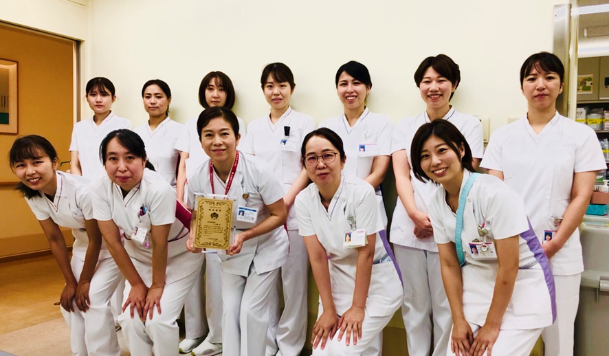

看護ケアの質評価・改善システム 一般社団法人 日本看護質評価 改善機構


一般社団法人 日本看護質評価
改善機構 代表理事 上泉 和子
Copyright ©2015 JINQI All Rights Reserved
QIチャンピオン
QIチャンピオン賞は、構造・過程・アウトカム（満足度）において、得点および改善度を考慮し、最も優れていると考えられる病棟に送られる賞です。
2021年度は下記の病院が受賞されました。クリックいただくと、各病棟の取り組みをご覧いただけます。本表彰は隔年で実施しています。
QIチャンピオン：富山大学附属病院 NICU様
富山大学附属病院
副看護部長（前年までNICU看護師長） 鹿島美友紀
このたびは、チャンピオン賞という名誉ある賞をいただき、大変光栄に思っております。ここ数年、コロナ禍で大変な状況にありますが、病院および病棟に明るい話題を届けることができ、深く感謝申し上げます。
当院は、病床数612床で、県下唯一の大学病院として、高度急性期病院、特定機能病院などの機能を有しています。NICUは12床で、地域周産母子医療センターとして、重症度の高いお子さんを県内外から受け入れております。NICUは、他病棟から少し遅れて2017年度から看護ケアの質評価を受審しております。参加のきっかけは、自分達の看護が自己満足ではなく、第3者評価を受けることで、看護の質を評価していきたいと考えたことでした。
この4年間は、リコメンデーションを基に、現状分析を重ねながら改善戦略を考え、色々な仕組みを構築してきました。
「内なる力を強める」では、医師と共に児の疾患に合わせたクリティカルパスの作成や、退院部門と退院支援パスおよび地域循環型パスを作成しました。
「家族の絆を強める」は、24時間面会、きょうだいや祖父母の面会体制を整え、家族の時間を大切にしてきました。新型コロナウイルス感染症の拡大に伴い、24時間面会は中止としましたが、基準や規模を縮小しながら家族面会を継続しました。
「直接ケア」では、ＮＩＣＵラダーや動画教材の作成、多職種で痛みのケアについて学びました。
「場をつくる」は、多職種協働の倫理カンファレンスの導入、インシデントを防ぐために平日「医師-看護師合同の安全パトロール」の導入など、看護QIの結果や尺度を用いて、成果を見える化しながら取り組んできました。
昨年度は「多職種との協働ハッピープロジェクト」「円滑な退院に向けた、お家に帰ろうプロジェクト」といった、ワクワクするようなテーマで取り組みました。改善計画を実践してきた中で、一番成果と感じるのは多職種協働の構造、過程が構築され、アウトカムにつながっていると感じています。そして、ご家族からも評価を得たこと、そして第3者機関に評価していただいたことは大変光栄なことで、スタッフには心から敬意を表したいと思います。今後も、ご家族に「富山大学附属病院で良かったね。」と信頼していただけるような看護を目指していきたいと思います。
最後に、当院NICU/GCUの理念は「安全な医療・看護を提供し、ご家族と共に赤ちゃんの成長を見守ります。赤ちゃんを中心としたファミリー支援に努めます」と掲げています。これは、医療者だけでなくご家族にも見えるところに掲示し、伝えることを大事にしています。すべては、この理念が浸透し、ここを基本としながら看護を考える柔軟性や組織風土が培われてきているのではないかと考えています。今後も、今回の栄誉を励みに、看護の質向上に寄与していきたいと思います。
質改善賞：宮崎県立宮崎病院４階東病棟 様
宮崎県立宮崎病院
4階東病棟 看護師長 但馬りか
- 病棟の紹介
当院は宮崎県の中核病院として、病床数535床と22の診療科があります。三次救急医療指定病院、地域がん診療連携拠点病院、地域周産期母子医療センターなどの役割を担い、令和3年10月1日で創立100周年を迎えました。看護部は、「人々のこころにそえる安心と最高の価値を提供し地域医療に貢献する」という理念に基づいて、日々の看護を実践しています。4東病棟(産婦人科病棟)は、この度「質改善賞」を受賞しました。私たちは前向きで素直な気持ちをモットーに思いやりの気持ちをもって看護に取り組んでいます。
- 質改善の取り組み
2019年度の看護ケアの質評価では、「構造：内なる力を強める」が33.3%、「構造：場をつくる」が58.3%でした。内なる力を強めるためには、患者自身が自らの状況を知るために患者への説明や指導などをどのように関わっているか現状を分析し、改善内容を検討しました。｢内なる力を強める｣領域では、患者指導用のパンフレットを整え、クリティカルパスに組み込み、確実に実施できるようにしました。コロナ禍で面会制限があったため、家族が同席できる退院時に退院指導するようにクリティカルパスに反映させました。このことが、個別性のある退院指導に結びつきました。また、今まで当たり前に行ってきた看護やリーダー業務など暗黙知をピックアップし、マニュアル作成や明文化しました。｢場をつくる｣領域では、多職種カンファレンスを曜日毎に計画しました。患者を多角的にアセスメントできる機会になり、チーム連携に結び付きました。
このような取り組みの結果、2020年度は構造面の「内なる力を強める」は33.3％から75％に改善し、「場をつくる」は58.3％から83.3％となりました。過程面については、全ての項目で全国平均または高い結果となりました。
- 質改善賞を受賞しての今後の取り組み
看護ケアの質評価を受け、自分たちの病棟の弱い看護面がわかり、改善に取り組む事ができました。得点が高くなった項目については自信にも繋がり、より安心できる看護を目指したいという思いが強くなりました。
私たちが今回この賞をいただけたのは、コロナ禍で状況の厳しい中で看護部の協力体制や院内の他職種スタッフ、保健所など地域職員の方々の協力のお陰でもあります。この賞に恥じぬよう、これからも患者さまやそのご家族、地域の皆さまへ看護を提供できるよう質向上への取り組みを継続してまいります。
質改善賞：東京臨海病院７Ｃ病棟 様
東京臨海病院 7C病棟の取り組み
日本私立学校振興・共済事業団 東京臨海病院
７C病棟師長 多田恵子
当院は東京都江戸川区にある病床数400床の急性期病院です。病院の理念である病院と患者の相互信頼に基づく地域に必要な医療を提供しています。
7C病棟では、看護部の理念「思いやりのある看護」を大切にしながら、消化器外科疾患の急性期から終末期の看護を実践しています。入院患者の約60％は65歳以上の高齢者であり入院前から退院後地域で暮らす患者の生活を考え看護を提供することが大切と考えています。当病棟の看護師の平均経験年数は7.4年であり、毎年2～3名の新人看護師が配属されています。
2018年の看護ケア質評価の結果では、構造のスコアは低く、過程とアウトカムのスコアが高く、熟練ナースが看護の質を維持している状況が伺えました。また、他職種連携と看護師同士の協力体制について課題が見えました。地域包括ケアシステムにおいて、急性期病院の看護師は、患者の病態の改善を優先した看護を提供するとともに、地域につながる看護を展開することが求められています。病院に勤務する看護師は、早い段階から地域で生活する患者とその家族を支援するために地域と連携することが必要です。
そこで７C病棟での取り組みとして、
１、入退院支援部門や他職種連携して患者の希望を尊重し意思決定を支援していく
２、看護提供方式ではこれまでのチームナーシング+受け持ち制からデイペアナーシング
の導入へ取り組みました。
他職種連携への取り組みでは、入退院支援部門と連携し患者の思いを尊重し患者がその人らしく地域で生活していけるよう検討を進めています。円滑に退院支援が進むよう顔が見える関係とタイムリーな情報共有を心がけています。多職種カンファレンスでは、治療方針や患者の意思決定を支援することを看護師がリーダーシップを発揮して他職種と取り組んでいます。そうすることで看護師は、徐々に多職種カンファレンスを看護ケアに活かせることを実感できるようになり、進んでカンファレンスの事前準備をするように変化していきました。
また、デイペアナーシングの導入へ取り組んだことで経験値の違う看護師がペアとなりお互いを補完することが経験値の浅い看護師の安心と看護の質担保に繋げることができるようになりました。ベッドサイドでお互いの看護ケアを把握することが看護の可視化となり効果的なOJTにつながっていると思います。
今回の看護の質評価を実施した2020年10月頃は、COVID-19感染症によって看護を取り巻く外部環境が大きく変化しました。７C病棟のスタッフもCOVID-19感染症対応による病棟編成を経験し、再び消化器外科病棟へ戻った時期でしたが、看護ケアプロセスのスコアは維持できていました。COVID-19感染症で家族面会が困難になったことが影響していましたがアウトカムのスコアも維持できていました。
今回の結果から、看護を取り巻く外部環境や内部環境が変化し看護の対象の特徴が変化しても、看護を提供する構造、仕組みを整えることが、看護の質を維持するために重要であることが解りました。また構造を整えると、状況に合わせて柔軟な対応が可能となること学びました。そして現在、私たちは再びCOVID-19感染症対応病棟として頑張っています。
看護をデータ化し可視化する事の難しさを感じる中、看護ケアの質評価の結果を日々の看護ケアと照らし合わせてみていくことで、見えない部分に気づくことが出来ると思います。今回の結果からも多くの課題が見えていますが、この受賞の喜びを糧に看護ケアの質向上にむけて前に向きに取り組んで行きたいと思います。
最後に自分たちの看護ケアを振り返る機会を与えてくださった方々に深く感謝申し上げます。
